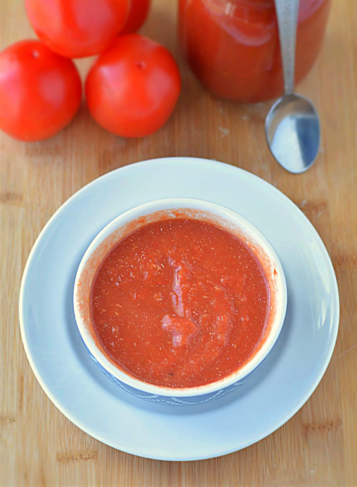

Homemade Tomato Puree

Description
This is a base recipe to all our cooking needs whether be Marinara sauce, pizzas, pastas, Indian meals, subzis or curries. Homemade tomato puree is not as difficult as it sounds. I always keep a jar full of homemade tomato puree ready in my fridge/freezer at all the time. It comes in really handy, saves a lot of time and above all it is HOMEMADE!!
Use thick pulp-y red tomatoes for this recipe. They are juicy and also add silkiness to a gravy or sauce.
Tomatoes are blanched, skinned, pureed and boiled to obtain the rich color of tomatoes. Add olive oil to the pureed tomatoes during boiling to preserve it for longer time.
Ingredients
- WILL YIELD 3 CUPS OF TOMATO PUREE
- 6-8 medium size tomatoes
- 2 tablespoon Olive oil
- 1 teaspoon Vinegar (optional – use only if storing for a longer time)
Steps
- Wash and clean tomatoes. Apply a small incision in tomatoes and drop them in a potful of boiling water for 7-9 minutes.
- Soon you will notice the skin peeling off from the tomatoes. Use a slotting spoon and remove tomatoes from hot water and give them a bath by dropping them in cold water. This will speed up the peeling process.
- Soon you will notice the skin peeling off from the tomatoes. Use a slotting spoon and remove tomatoes from hot water and give them a bath by dropping them in cold water. This will speed up the peeling process.
- Heat olive oil in a pan and pour in pureed tomatoes and bring it to a boil. Boiling gives tomato puree a deep rich red color. For a thick tomato puree simmer it for about 30 – 45 minutes on a medium flame till it reaches its desired consistency, stirring occasionally.
- Once its thick, allow it cool down completely, then transfer it in canning jars or airtight containers. Store it in the fridge for a week or you may even freeze this puree for later use.